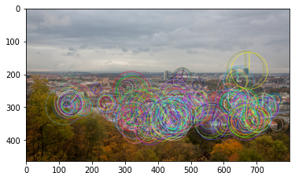
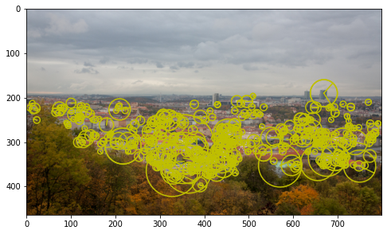
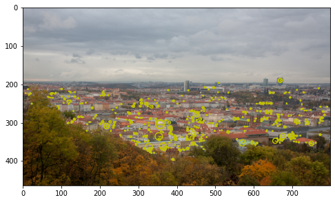
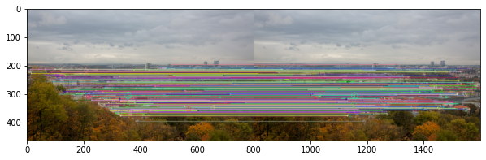
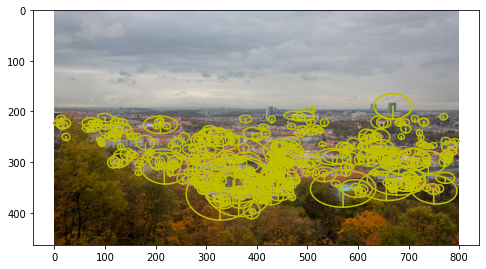

assert isinstance(to_numpy_image('data/strahov.png'), np.ndarray)libpng warning: iCCP: known incorrect sRGB profileto_np (array:Union[List,Tuple,numpy.ndarray,torch.Tensor])
to_torch (x:Union[List,<built-infunctionarray>,torch.Tensor])
to_numpy_image (img:Union[str,<built-infunctionarray>,torch.Tensor])
assert isinstance(to_numpy_image('data/strahov.png'), np.ndarray)libpng warning: iCCP: known incorrect sRGB profileopencv_kpts_from_laf (lafs:torch.Tensor, mrSize:float=1.0, resps:Optional[torch.Tensor]=None)
laf_from_opencv_kpts (kpts:List[cv2.KeyPoint], mrSize:float=6.0, device:torch.device=device(type='cpu'), with_resp:bool=False)
Let’s detect ORB keypoints and convert them to and from OpenCV
img = cv2.cvtColor(cv2.imread('data/strahov.png'), cv2.COLOR_BGR2RGB)
det = cv2.ORB_create(500)
kps, descs = det.detectAndCompute(img, None)
out_img = cv2.drawKeypoints(img, kps, None, flags=cv2.DRAW_MATCHES_FLAGS_DRAW_RICH_KEYPOINTS)
plt.imshow(out_img)libpng warning: iCCP: known incorrect sRGB profile<matplotlib.image.AxesImage>
img = cv2.cvtColor(cv2.imread('data/strahov.png'), cv2.COLOR_BGR2RGB)
det = cv2.ORB_create(500)
kps, descs = det.detectAndCompute(img, None)
lafs, r = laf_from_opencv_kpts(kps, 1.0, with_resp=True)img = cv2.cvtColor(cv2.imread('data/strahov.png'), cv2.COLOR_BGR2RGB)
det = cv2.ORB_create(500)
kps, descs = det.detectAndCompute(img, None)
lafs, r = laf_from_opencv_kpts(kps, 1.0, with_resp=True)
kps_back = opencv_kpts_from_laf(lafs, 1.0, r)
out_img = cv2.drawKeypoints(img, kps_back, None, flags=cv2.DRAW_MATCHES_FLAGS_DRAW_RICH_KEYPOINTS)
plt.imshow(out_img)<matplotlib.image.AxesImage>
OpenCV uses different conventions for the local feature scale.
E.g. to get equivalent kornia LAF from ORB keypoints, one should you mrSize = 0.5, while for SIFT – 6.0. The orientation convention is also different for kornia and OpenCV.
opencv_ORB_kpts_from_laf (lafs, resps:Optional[torch.Tensor]=None)
opencv_SIFT_kpts_from_laf (lafs, resps:Optional[torch.Tensor]=None)
laf_from_opencv_SIFT_kpts (kpts:List[cv2.KeyPoint], device:torch.device=device(type='cpu'), with_resp:bool=False)
laf_from_opencv_ORB_kpts (kpts:List[cv2.KeyPoint], device:torch.device=device(type='cpu'), with_resp:bool=False)
img = cv2.cvtColor(cv2.imread('data/strahov.png'), cv2.COLOR_BGR2RGB)
det = cv2.SIFT_create(500)
kps, descs = det.detectAndCompute(img, None)
out_img = cv2.drawKeypoints(img, kps, None, flags=cv2.DRAW_MATCHES_FLAGS_DRAW_RICH_KEYPOINTS)
plt.imshow(out_img)libpng warning: iCCP: known incorrect sRGB profile<matplotlib.image.AxesImage>
The keypoints are small, because, unlike for ORB, for SIFT OpenCV draws not real regions to be described, but the radius of the blobs, which are detected. Kornia and kornia_moons, inlike OpenCV, shows the real description region.
lafs, r = laf_from_opencv_SIFT_kpts(kps, with_resp=True)
visualize_LAF(image_to_tensor(img, False), lafs, 0, 'y', figsize=(8,6))

If you want to see the image, similar to OpenCV one, you can scale LAFs by factor 1/12.
visualize_LAF(image_to_tensor(img, False),
kornia.feature.laf.scale_laf(lafs, 1./6.0), 0, 'y', figsize=(8,6))

Now let’s do the same for matches format
kornia_matches_from_cv2 (cv2_matches, device=device(type='cpu'))
cv2_matches_from_kornia (match_dists:torch.Tensor, match_idxs:torch.Tensor)
img = cv2.cvtColor(cv2.imread('data/strahov.png'), cv2.COLOR_BGR2RGB)
det = cv2.SIFT_create(500)
kps, descs = det.detectAndCompute(img, None)
match_dists, match_idxs = kornia.feature.match_nn(torch.from_numpy(descs).float(),
torch.from_numpy(descs).float())
cv2_matches = cv2_matches_from_kornia(match_dists, match_idxs)
out_img = cv2.drawMatches(img, kps, img, kps, cv2_matches, None,
flags=cv2.DRAW_MATCHES_FLAGS_DRAW_RICH_KEYPOINTS)
plt.figure(figsize=(10,5))
plt.imshow(out_img)
match_dists_back, match_idxs_back = kornia_matches_from_cv2(cv2_matches)
assert(allclose(match_dists_back, match_dists))
assert(allclose(match_idxs_back, match_idxs))libpng warning: iCCP: known incorrect sRGB profile
OpenCVDetectorWithAffNetKornia (opencv_detector, make_upright=False, mrSize:float=6.0, max_kpts=-1)
Base class for all neural network modules.
Your models should also subclass this class.
Modules can also contain other Modules, allowing to nest them in a tree structure. You can assign the submodules as regular attributes::
import torch.nn as nn
import torch.nn.functional as F
class Model(nn.Module):
def __init__(self):
super().__init__()
self.conv1 = nn.Conv2d(1, 20, 5)
self.conv2 = nn.Conv2d(20, 20, 5)
def forward(self, x):
x = F.relu(self.conv1(x))
return F.relu(self.conv2(x))Submodules assigned in this way will be registered, and will have their parameters converted too when you call :meth:to, etc.
.. note:: As per the example above, an __init__() call to the parent class must be made before assignment on the child.
:ivar training: Boolean represents whether this module is in training or evaluation mode. :vartype training: bool
OpenCVFeatureKornia (opencv_detector, mrSize:float=6.0)
Base class for all neural network modules.
Your models should also subclass this class.
Modules can also contain other Modules, allowing to nest them in a tree structure. You can assign the submodules as regular attributes::
import torch.nn as nn
import torch.nn.functional as F
class Model(nn.Module):
def __init__(self):
super().__init__()
self.conv1 = nn.Conv2d(1, 20, 5)
self.conv2 = nn.Conv2d(20, 20, 5)
def forward(self, x):
x = F.relu(self.conv1(x))
return F.relu(self.conv2(x))Submodules assigned in this way will be registered, and will have their parameters converted too when you call :meth:to, etc.
.. note:: As per the example above, an __init__() call to the parent class must be made before assignment on the child.
:ivar training: Boolean represents whether this module is in training or evaluation mode. :vartype training: bool
OpenCVDetectorKornia (opencv_detector, mrSize:float=6.0, make_upright=False, max_kpts=-1)
Base class for all neural network modules.
Your models should also subclass this class.
Modules can also contain other Modules, allowing to nest them in a tree structure. You can assign the submodules as regular attributes::
import torch.nn as nn
import torch.nn.functional as F
class Model(nn.Module):
def __init__(self):
super().__init__()
self.conv1 = nn.Conv2d(1, 20, 5)
self.conv2 = nn.Conv2d(20, 20, 5)
def forward(self, x):
x = F.relu(self.conv1(x))
return F.relu(self.conv2(x))Submodules assigned in this way will be registered, and will have their parameters converted too when you call :meth:to, etc.
.. note:: As per the example above, an __init__() call to the parent class must be made before assignment on the child.
:ivar training: Boolean represents whether this module is in training or evaluation mode. :vartype training: bool
make_keypoints_upright (kpts)
kornia_cv2dog = OpenCVDetectorKornia(cv2.SIFT_create(500))
kornia_cv2sift = OpenCVFeatureKornia(cv2.SIFT_create(500))
timg = image_to_tensor(cv2.cvtColor(cv2.imread('data/strahov.png'), cv2.COLOR_BGR2RGB), False).float()/255.
lafs, r = kornia_cv2dog(timg)
lafs2, r2, descs2 = kornia_cv2sift(timg)
visualize_LAF(timg, lafs, 0, 'y', figsize=(8,6))libpng warning: iCCP: known incorrect sRGB profile

kornia_cv2dogaffnet = OpenCVDetectorWithAffNetKornia(cv2.SIFT_create(500), make_upright=True)
timg = image_to_tensor(cv2.cvtColor(cv2.imread('data/strahov.png'), cv2.COLOR_BGR2RGB), False).float()/255.
lafs, r = kornia_cv2dogaffnet(timg)
visualize_LAF(timg, lafs, 0, 'y', figsize=(8,6))/var/folders/j9/y_61c9h10xz3d5g4d1rrny5c0000gn/T/ipykernel_19919/2708263890.py:65: DeprecationWarning: `LAFAffNetShapeEstimator` default behaviour is changed and now it does preserve original LAF orientation. Make sure your code accounts for this.
self.affnet = kornia.feature.LAFAffNetShapeEstimator(True).eval()
libpng warning: iCCP: known incorrect sRGB profile